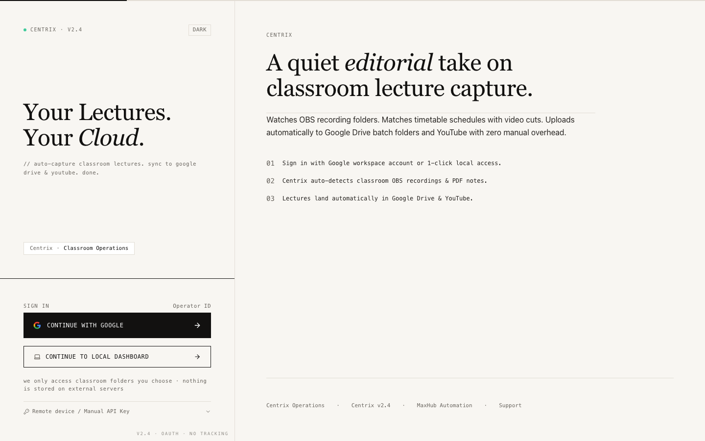

Watches OBS recording folders. Matches timetable schedules with zero manual overhead. Uploads automatically to Google Drive batch folders and YouTube with 100% offline resilience.

Zero learning curve for teachers — 100% automated background execution.
Download and run Centrix-Setup.exe on the classroom PC. Select your Vidyapeeth center and assign the Room number.
Faculty and operators do nothing extra! Start the lecture in OBS Studio as usual, teach the class, and click "Stop Recording" when finished.
Centrix detects the file, calculates a 7-signal timetable match, standardizes file naming, and auto-uploads chunked bytes to Google Drive & YouTube.
Center Coordinators can view live upload status via the local dashboard (localhost:5200) or confirm any ambiguous overtime sessions with 1 click.
Instant answers on classroom OBS detection, 7-signal matching, offline sync, or deployment.
Replacing manual errors with algorithmic precision
Replaces 2 to 3 hours spent daily per center on file naming and manual uploading.
Algorithmic timetable matching guarantees lectures land in the exact batch directory.
Chunked Drive API uploads resume from the exact byte on network interruption.
Lectures are published to students within minutes instead of next-morning delays.
Phased pilot deployments are active across PhysicsWallah Vidyapeeth & Pathshala offline centers. Schedule a 15-minute live demonstration or request setup credentials for your classrooms.
Author & Project Lead: Aniket Mishra • aniket.mishra2@pw.live
Live AI reasoning over Centrix architecture
Centrix has a complete internal knowledge base of its architecture, 7-signal timetable matching, SQLite WAL schema, DPAPI encryption, and state machines.
💡 By default, our built-in 0ms client NLU engine answers all queries instantly. To enable free-form conversational reasoning with Google's Gemini 1.5 Flash, paste your free Google AI Studio key below.